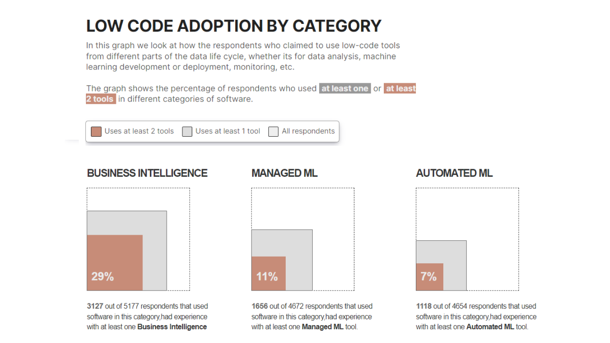
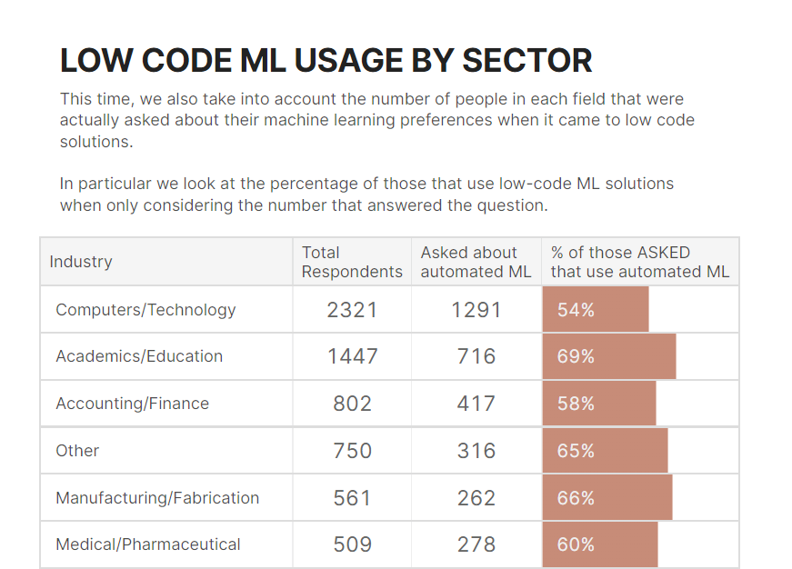
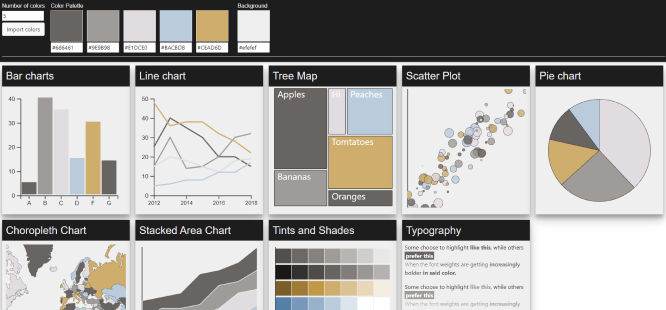

My Work
State of Low-Code in Data
For my Kaggle ML and DS Survey 2022 submission, I looked at how data professionals were using low-code tools to quickly build and deploy data pipelines without the need for complex code.
This competition entry won a runner-up spot in the competition. It used data from various low-code trend industry reports as well as Kaggle survey data to look into the usage of these tools.
The notebook contains graphs in Python, with more involved graphs and tables using Markdown + CSS.
View notebook
The notebook contains graphs in Python, with more involved graphs and tables using Markdown + CSS.
View notebook


Kaggle Survey Challenges
The Kaggle ML and DS Survey competition challenges participants to create insightful data stories from its annual surveys on the state of data science and data professionals.
I had placed within the top 5 twice in the '20 and '21 ML and DS Survey challenges.
My entries used a combination of D3 in Javascript, along Python and Markdown used in traditional Jupyter notebooks
2020 Entry 2021 Entry
2020 Entry 2021 Entry


DataViz Palettes
As I started getting interested in data visualisation, I wanted to create a tool to quickly iterate on colour palettes and how they looked across different types of charts.
In this site I used Angular along with D3.js to create different charts.
View Project
View Project

